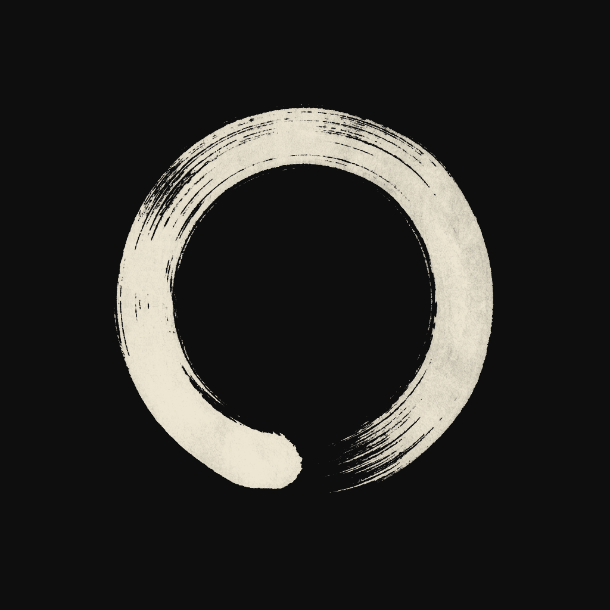

AIが毎時間つくって毎時間消える世界で、最初に支払ってくれた9人で円相が閉じる。9つの弧で1つの円。消えないように刻んだ。
MUのAIは毎時間ひとつ服を生み、毎時間消えていきます。その中で、最初に本当に支払ってくれた9人。9つの弧がそろって、はじめて円相が閉じる。この円は——消えないように、複数の独立した方法で永久に刻みました。
| だれ | 刻印 | デザイン指紋(sha256) | |
| 1 | KENNY | /you No.001 | 84db4219fffe9327… |
| 2 | HARLEY | MUGEN No.132 | fd03ca925ce00114… |
| 3 | YUJI | MUGEN No.349 | 4ad4c250a797a497… |
| 4 | YAMANO | MUGEN No.519 | 53439ce6fef4d9e9… |
| 5 | M.I | MUGEN No.008 | 8aa1fa3f38c21efd… |
| 6 | IMOTO | MUON No.003 | c3ed7f370c5e4eda… |
| 7 | KENNY | MUON No.003 | 10ad7b7a8a07641e… |
| 8 | LEAD7 | /you No.019 | 6dbc05be7fcede0c… |
| 9 | IIDA | ELEPOTE 001 | 92e0a0238270913b… |
master円相 sha256 7ee9fecb56b057a6a03a81d9… を改竄不能な台帳に刻印。
9枚すべてのデザイン指紋を含むmanifest sha256 2db2d0120927a60bae903b54… を別txで刻印（1枚も差し替えられない）。
manifestをMUの鍵で署名。誰でも公開鍵で検証できる。
pubkey 873de51e1ed74b9ce346d96bed50d366b51428480b4a5f8d59014be6a17a0652
signature 0140ff8503570c0507be32d610b6bf44b39754b7619f8521…
誰でも、第三者として検証できます：
# 1) デザインの指紋が一致するか shasum -a 256 _proof_full_circle.png # → 7ee9fecb56b057a6a03a81d9f60f7ea9737b4f109792c691779552f7274b3c0f # 2) Solanaに刻まれた指紋を読む（改竄なし） solana confirm -v 492dY4xKD4WhBwvGAtuDyrUQYCRsHgRpET7o2GxufCFDVAvuXwjtX49V9biK6rSytjztyDQcTst6Ts4s5nK3aZpS -u mainnet-beta # 3) MUの署名を検証（manifest.json の attestation） # pubkey 873de51e1ed74b9ce346d96bed50d366b51428480b4a5f8d59014be6a17a0652 で signature を ed25519 検証